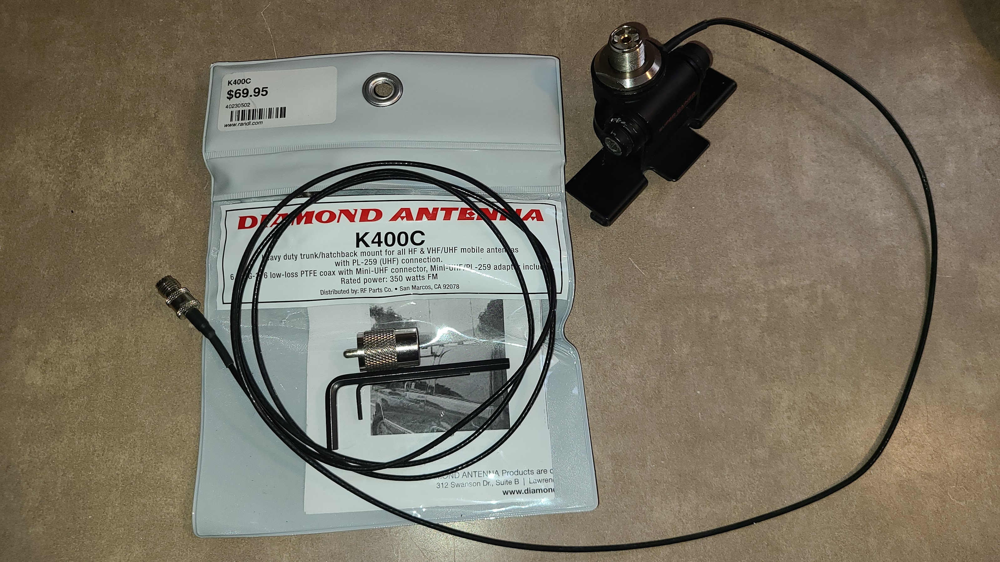
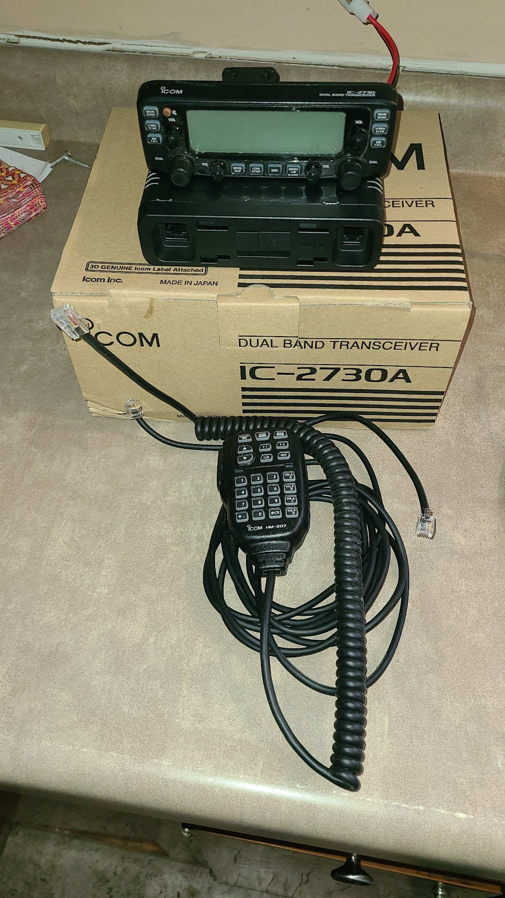
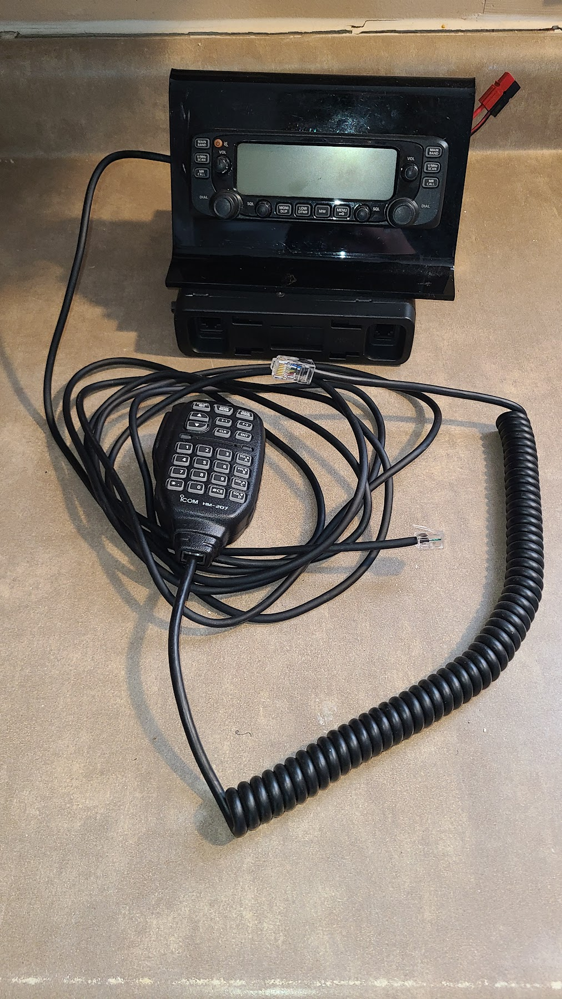
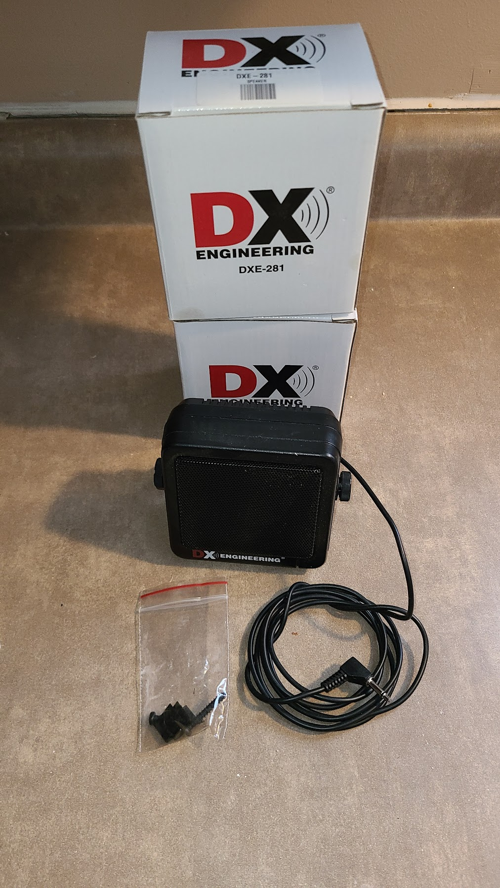
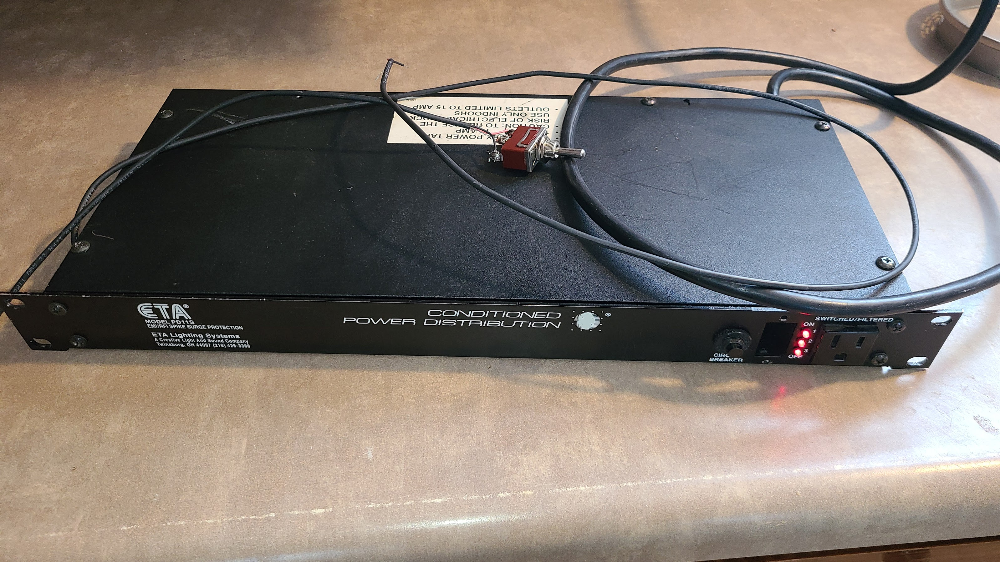
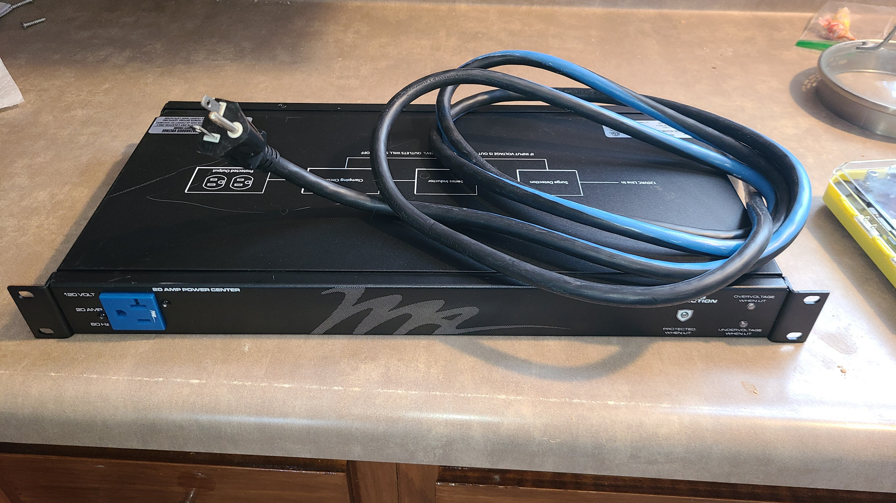
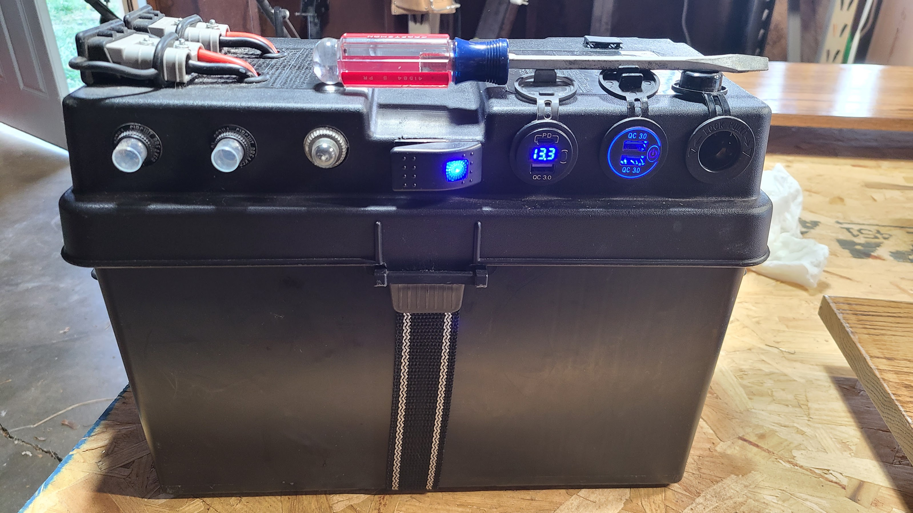
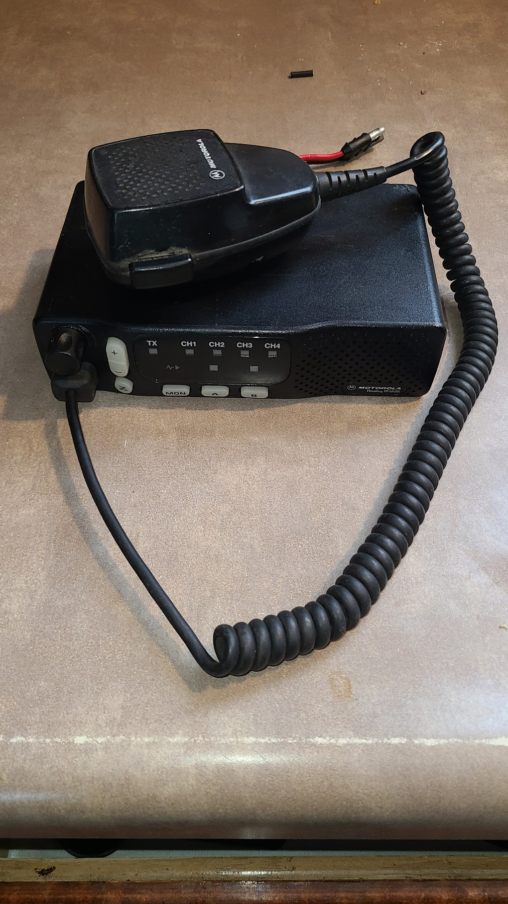
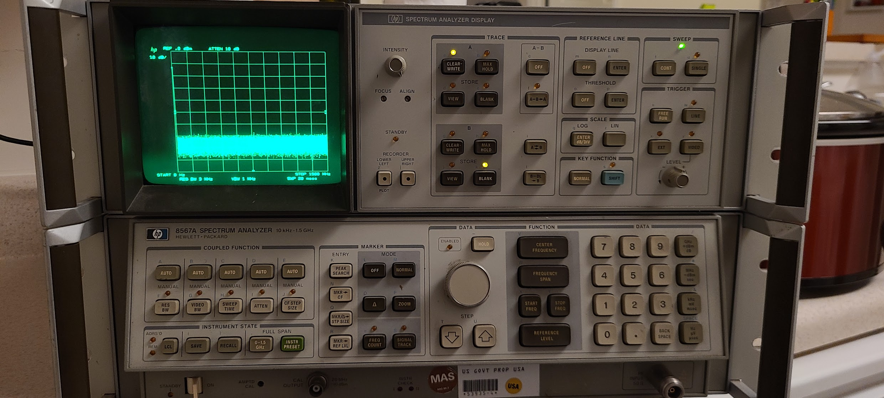
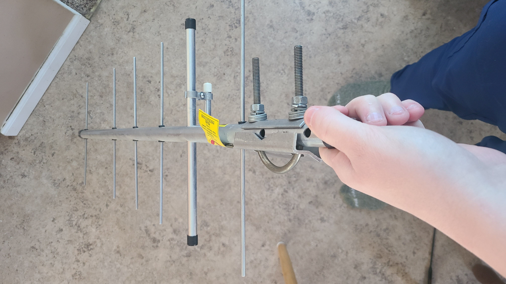

Unfortunately, due to unforseen circumstances, Kat (NG9NB) and I (N9NG) are going to be moving out of the area, and won't be able to take all of our things with us. Therefore, we would like to offer some of our amateur radio and related equipment to you all. Please contact me via Discord or e-mail (kd9ydp (AT) gmail.com) if you are interested in the equipment\want to make an offer.
Diamond K400C lip mount with mini UHF to UHF connector. Also included is a Diamond C110 10ft extension cable. The K400C is missing the protective cover that goes over one of the adjustment screws as well as the UHF connector cap. Original bags and product literature included. The C110 cable has minor bends\kinks in it as it was previously installed in a car. Some minor cosmetic damage present that does not affect the product's usability or performance in any way.
Click here to see more about the K400C on the manufacturer's website.
Click here to see more about the C110 on the manufacturer's website.
Originally paid $70 for the K400C and $20 for the C110 new. Asking $50.
ICOM IC-2370A Mobile Dual Band 50W Transceiver. Comes with original box, product literature, power cable, microphone, and control head cable. Unit had minor cosmetic damage. Completely functional. Has crossband repeat functionality and has the relevant manual addendum included.
Click here to see more about the IC-2730A on the manufacturer's website.
Asking $150.
ICOM IC-2370A Mobile Dual Band 50W Transceiver. Only comes with radio, microphone, control head, and Nifty! Accessories desk stand as pictured. Unit had minor cosmetic damage. Completely functional. Has crossband repeat functionality and has the relevant manual addendum included. We purchased this at a hamfest to have a spare and haven't done much with it since.
Click here to see more about the IC-2730A on the manufacturer's website.
Click here to see more about the Nifty! Accessories stand on the manufacturer's website.
Asking $125.
DX Engineering DXE-281 Speaker. One has been used in a mobile installation but is like new and comes with all original accessories and box save for some of the plastic packaging. 8 ohm impedance, 6ft cable permanently attached. Has 1/8" TS connector.
Click here to see more about the DXE-281 on the manufacturer's website.
Asking $10/ea.
ETA Systems 3 Channel 15A Rackmount Power Sequencer/Conditioner. The unit has some cosmetic damage but functions fine. The original switch failed and was replaced with an external SPDT switch. By bridging the red and ground wires, the sequencer is turned on. By bridging the black and ground wires, the sequencer is turned off.
Click here to see more about a similar model power sequencer.
Asking $40.
Middle Atlantic PD-920R-SP 9 Outlet Surge Protected Rackmount PDU. Has 9 NEMA 5-20R receptacles. NEMA 5-20P for input. I can replace the 5-20P with a 5-15P (normal 15a plug) if you so desire. This unit has minor cosmetic damage.
Click here to see more about the PD-920R-SP on the manufacturer's website.
Asking $40/ea.
Custom 12V 100Ah LiFePO4 Battery Box. A LiTime 100Ah LiFePO4 battery in a NOCO box with custom power distribution installed. Ready to power your next multi-radio operation, long hour operation, repeater, or station backup battery. Can also be connected to an inverter for camping or other activities. Weighing in at under 30 lbs, this is a large capacity battery that is actually portable! Connect your equipment to the built-in connectors, or directly to the studs. Has two 50A circuits with one Anderson SB50 connector and one PP45 connector on each circuit. Also has a 15A accessory circuit with a cigarette socket, dual USB A for charging, and a USB C/USB A QC3.0 module. Also has an integrated voltmeter. All circuits are protected by resettable circuit breakers. This battery was cycled about 20-30 times and is rated for a minimum of 4000 charging cycles, meaning you'll be getting a practically new battery. We paid about $350 for the battery, $150 for the other components. Original documentation will be included. Also included is a Napa 6/12V battery float charger.
Click here to see more about the LiTime 12V 100Ah battery on the manufacturer's website.
Asking $300.
Motorola Radius M1225 25W 136-162MHz 4 Channel radio. I purchased this at a Hamfest to use as an APRS radio with a soundcard TNC and never got around to it. I only have the radio and the microphone. Has stock connector on it but I can install a PowerPole connector if desired. Model# M33DGC90E2AA.
Click here to see more about the Motorola Radius M1225 online.
Asking $50.
HP 8567A Spectrum Analyzer (10kHz - 1.5GHz). One of the link cables is broken and needs a new 50-pin Centronics connector soldered on. After that, unit should be fully functional. Calibration is stored in volatile memory and unit is missing calibration battery but there is no damage on the board from a leaky battery. Therefore, unit is uncalibrated. We did a quick and dirty test and the unit seemed fairly accurate, perhaps several Hz out of alignment in the 144MHz band. Warning: This is a 4U rackmount system split into two units. It is large and heavy. Has TXCO.
Click here to see more about the HP 8567A on the manufacturer's website.
Asking $50.
UHF TV Receive 6el Yagi. Has UHF connector. I have used this in the past to transmit through with success and was able to tune it to a 1.0:1 SWR at 446MHz. Has mounting options for both vertical and horizontal polarization and an included U-bolt.
Click here to see more about the HP 8567A on the manufacturer's website.
Asking $10.
